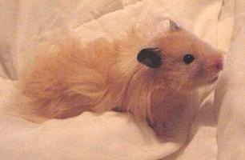
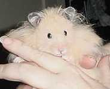
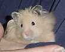

| A woman got my name and phone number from a store that keeps my card on file. Her son pleaded for a baby hamster for his birthday in April, but hasn't given it attention in months. She's been taking care of it, but wanted to find a happier situation. I explained to her my rules for accepting a surrendered pet: 1) If it's a child's pet, the child has to surrender the hamster personally. 2) I praise the child for wanting the hamster to be happy -- no guilting. But I also tell him that I believe the commitment to a pet is a responsibility for the rest of the pet's life, no matter what. 3) The hamster's home, toys, accessories and supplies must accompany him, because it can be tempting for a child to fill an empty cage, and I don't want that to be easy. 4) The hamster must come with a new, unopened container of his usual food. 5) I will do nothing to make the parting difficult. 6) I own the hamster. I will pay all his expenses and see to all of his care. The child is welcomed to visit or email for photos and stories, but I will never, ever give the hamster back. She agreed, and we had a lovely conversation. She didn't have the vocabulary to describe the ham, but it didn't matter, of course. She said she was a little dwarf girl and had a cute little cage. She didn't know the ham's name. I asked her to let the child think about it a few days, then call back to make an appointment. They came after school, bearing a Critter Trail One with a 6" long-haired Syrian in it. Definitely a male too, and the car must have been a little warm for him. I don't know where I got the composure not to burst out laughing when that cute young boy eagerly introduced me to -- Little Miss Whiskers. The kids checked out my hams in the adjacent rooms while I asked about "Miss" Whiskers's routine to minimize disruptions as I ease him into ours. He was on strong-smelling yellow pine, but the cage was clean. He's not had fresh food. He's used to being out of his cage for a ball run weekly on cleaning day, and hasn't been handled all summer. I didn't know whether he'd tolerate my touching him, so I didn't try while they were here. Everyone seemed pleased as we hugged and waved goodbye. I turned to Miss Whiskers. Talking softly, I opened the cage door, and he slipped himself into the tube leading upstairs. It took him a full minute to scoot his way up. The tube is so small for him I feared I'd have to extract him, but his nest was up there, so he'd done it before. I slowly opened the lid to that section, and he stood to let me lift him from his nest. He turned brilliantly curious ruby-black eyes up to meet mine, and I'd swear he smiled. It was love at first sight. He walked about on me and didn't struggle to get down or avoid my hands, nor did he once put his mouth to me. Gentle and fearless, he flinched once or twice in the first minute, but not since. This lovey was born for hands, and I'm blessed he's come to mine. I checked him over and he seemed quite healthy, if noticeably thin. He's strong and fast, walks beautifully, and has a youthful scamper -- a delightful 6-month-old boyishness. He has a long, full, fluffy coat -- the prettiest I've seen. His wheel was the one that comes with that cage -- one I love for dwarf hams, but that Syrians outgrow at 6-8 weeks, even my runts. When I set him back inside, he hopped on it and walked slowly, the longest hairs of his skirt falling forward to brush his whiskers. My favorite minutes with my hams are at "cookie time." Each ham takes his turn lying on my chest with his little butt cupped in my hand and we just watch each other as he munches the treat of the day. It's always wonderful when a ham first shows trust by eating his cookie instead of pouching it. Most of the long-term residents hand me back their leftovers, knowing there will always be more. A sign of contentment, I think. Miss Whiskers didn't pouch his first cookie. He shined those beautiful eyes up to meet mine as he ate slowly from my fingers, one paw on my chest and the other laid gently on my hand. I'm so glad he's home. |
| Little "Miss" Whiskers by Jane Landis |
|  |
|  |
|  |